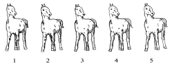
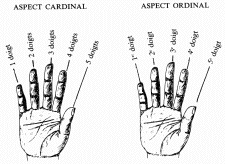
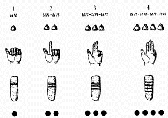
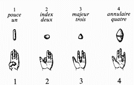
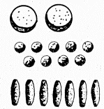
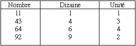
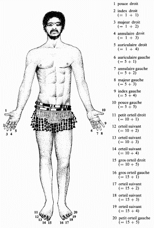
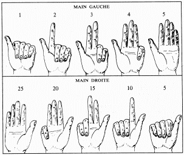

|
1) Les symbolisations
du nombre avant la base
Une fois que l'être
humain eut découvert la notion de nombre, et ayant compris la différence
entre les nombres cardinaux
et ordinaux, il fut conduit à changer les instruments qui lui servaient à compter (cailloux, coquillages, bâtonnets, colliers de perles, gestes relatifs à des parties du corps, etc...). Et c'est ainsi que ces instruments sont devenus de véritables symboles numériques, bien plus pratique pour compter, retenir et calculer.
Un autre progrès
fut réalisé avec la création des noms de nombres,
permettant alors une désignation orale beaucoup plus précise
des quantités, ainsi que des notions abstraites.

Ce qui avait été exprimé jusque là dans le langage parlé, fut simplement des modélisations n'ayant apparemment aucun rapport les unes avec les autres : les nombres étaient décrits au moyen de termes intuitifs, souvent en rapport direct avec la nature et le monde environnant :
le Soleil ou la Lune
pour un ; les yeux ou les ailes d'un oiseau pour deux ; le trèfle,
la multitude ou la foule pour trois, les pattes d'un animal pour quatre
...
Par la suite, les choses se structurèrent un petit peu avec l'utilisation du corps humain. On commença donc par des descriptions du genre : le pouce, pris pour commencer, pour 1; levé avec le doigt précédent pour deux ; le doigt qui divise également pour 3 ; tous les doigts levés sauf un pour 4 ; la main pour 5, etc ...
Mais la symbolisation concrète et l'expression orale des nombres ne furent pas les seules possibilités exploitées par l'homme au cours des âges. Il y eut aussi, mais beaucoup plus tard, la symbolisation écrite : celle qui met des chiffres à contribution, c'est à dire des signes graphiques de toute sorte (traits gravées, dessinés ou peints, marques en creux sur l'argile ou sur la pierre, signes figuratifs, lettres de l'alphabet, signes conventionnels, etc ...). Ces créations furent évidemment très importantes car elles permirent de substituer à toute « opération » sur les choses concrètes, l' «opération» correspondante sur les symboles numériques.
2) Qu'est ce qu'une base
?
Pour symboliser les
nombres, l'homme disposa ainsi de deux principes : l'un, que l'on peut
qualifier de cardinal, qui consiste à adopter dès le départ
un «symbole-étalon» comme représentant l'unité
et à répéter ce dernier autant de fois que le nombre
considéré contient d'unités ; l'autre, que l'on peut
qualifier d'ordinal, qui consiste à attribuer à chaque nombre
un symbole original, et donc à envisager une succession de symboles
n'ayant aucun rapport les uns avec les autres.

Selon le premier principe, les quatre premiers nombres par exemple sont donc représentés par une simple répétition d'autant de fois le nom du nombre 1, ou encore par l'alignement, la juxtaposition ou la superposition d'autant de cailloux, de doigts, d'encoches, de traits ou de ronds, représentant l'unité.

Selon l'autre principe, en revanche,
les mêmes nombres sont représentés par des mots, des
objets, des gestes ou des signes, tous différents les uns des autres.

Partant de l'une ou l'autre de ces deux règles fondamentales, l'homme put dès lors apprendre à concevoir des ensembles de plus en plus étendus. Mais dans les deux cas, il se heurta au début à de grandes difficultés. Pour représenter des nombres de plus en plus grand, on ne pouvait évidemment pas multiplier indéfiniment des cailloux, des bâtonnets, des encoches ou des noeuds de cordelettes ; et ni le nombre des doigts de la main, ni celui des parties du corps n'était extensible à volonté. On ne pouvait pas non plus répéter un même mot d'une manière illimitée ni créer à l'infini de nouveaux noms de nombre ou des symboles originaux : imaginez seulement ce que nous devrions aujourd'hui déployer comme symboles pour exprimer simplement la quantité de centimes égale au salaire
annuel de Bill Gates !
L'être humain se trouva désormais confronté à un problème insurmontable à première vue : comment désigner des nombres élevés avec le moins de symboles possibles ? Que l'on ait trouvé une solution à ce délicat problème, voila qui prouve bien que l'homme fait preuve d'une grande ingéniosité. La solution a été de privilégier un groupement particulier (comme la dizaine, la douzaine, la vingtaine ou la soixantaine, par exemple) et d'organiser la suite régulière des nombres selon une classification organisée fondée sur ce groupement originel. Autrement dit, on a convenu d'une «échelle» à partir de laquelle il est possible de répartir les nombres et leurs divers symboles suivant des paliers successifs, auxquels on peut donner les noms respectifs de : unités du premier ordre, unités du deuxième ordre, unités du troisième ordre, et ainsi de suite ... . Et c'est de cette façon que l'on est parvenu à une symbolisation structurée des nombres, permettant d'éviter des efforts de mémoire considérables.
C'est ce que l'on appelle
le principe de la base. Sa découverte a marqué la naissance
des systèmes de numération : systèmes dont la base
n'est autre que le nombre d'unités qu'il est nécessaire de
grouper, à l'intérieur d'un ordre donné, pour former
une unité de l'ordre supérieur.
Selon que ce principe
a été appliqué à des instruments, à
des mots d'une langue ou à des signes graphiques, il a donc
donné le jour à des numérations concrètes,
orales ou écrites ...
3) La base décimale
: la plus courante
Il n'y pas si longtemps encore, dans certaines régions d'Afrique occidentale, les bergers avaient une coutume bien pratique pour dénombrer un troupeau. On faisait défiler les bêtes les unes derrière les autres. Au passage de la première, on enfilait un coquillage à une lanière blanche, un autre coquillage à la deuxième, et ainsi de suite. Au passage du dixième animal, on défaisait le collier et on enfilait un coquillage à une lanière bleue associé aux dizaines. Puis on recommençait à enfiler des coquilles à la lanière blanche jusqu'au passage du vingtième animal, ou l'on enfilait un deuxième coquillage à la lanière bleue. Quand celle-ci contenait à son tour dix coquillages, cent bêtes ayant alors été comptées, on défaisait le collier des dizaines et l'on enfilait un coquillage à une lanière rouge, réservée cette fois aux centaines. Et ainsi de suite jusqu'à l'achèvement du compte des animaux. Au dénombrement de 258 bêtes, par exemple, huit coquillage se trouvait enfilés à la lanière blanche, 5 à la bleue et 2 à la rouge.
N'allons cependant
pas croire que ces gens là raisonnaient en «primitifs»
: nous comptons encore suivant le même principe qu'eux mais avec
des symboles différents.

L'idée fondamentale
de ce procédé réside en effet dans l'importance du
groupement (et du rythme des symboles de la série régulière)
par dizaines (ou «paquets» de dix), centaines (ou «paquets»
de dix dizaines), milliers (ou «paquets» de dix centaines),
etc .... Dans cette technique concrète, chaque coquillage de la
lanière blanche compte pour une unité simple, chaque coquillage
de la lanière bleue compte pour dix, tandis qu'un coquillage de
la lanière rouge marque un groupement de cent unités
(ou de dix dizaines). C'est ce que l'on appelle «le principe de la
base dix». Nous avons là un exemple de numération concrète
décimale.
Naturellement, au
lieu d'utiliser des coquillages et des lanières, ce principe pourrait
être aussi bien appliqué à des mots qu'à
des signes graphiques : on obtiendrait alors des numérations orales
ou écrites de base dix.
Notre numération
écrite actuelle procède de la même façon, mais
elle se sert des symboles graphiques suivants (auxquels on donne souvent
le nom de chiffres arabes) :
1 2 3 4
5 6 7 8 9 0
Les neufs premiers symboles
figurent les unités simples (ou unités du premier ordre décimal).
Il sont soumis au principe de position, puisque leur valeur varie en fonction
de la position qu'ils occupent dans l'écriture du nombre (un 3,
par exemple, valant trois unités, trois dizaines ou trois centaines
selon qu'il occupe la première, la deuxième ou le troisième
position dans une telle représentation chiffrée).
Quant au dixième
symbole, il représente ce que l'on appelle le «zéro»
: il sert à marquer l'absence de chiffres d'un certain ordre ; il
a aussi le sens du «nombre nul», résultat, par exemple,
de la soustraction d'un nombre par lui-même.
Dix, qui est le premier
nombre représenté au moyen de deux chiffres, s'écrit
: 10 (notation qui n'est autre qu'une forme abrégée de l'expression
«1 dizaine, 0 unité» ).
On représente
ensuite les nombres de 1 à 99 en combinant successivement deux de
ces chiffres (selon la règle de position):

La centaine, qui est égale
au carré de la base, s'écrit : 100 (ce qui signifie : «1
centaine, 0 dizaine, 0 unité» ) : c'est le plus petit nombre
représenté de cette manière, au moyen de trois chiffres.
Les nombres de 101
à 999 sont notés en combinant successivement trois des dix
chiffres fondamentaux :
101 («1
centaine, 0 dizaine, 1 unité»)
358 («3
centaines, 5 dizaines, 8 unités»), etc ...
Vient ensuite le millier,
qui est égal au cube de la base, et que l'on écrit sous la
forme : 1 000 («1 millier, 0 centaine, 0 dizaine, 0 unité»)
; c'est le plus petit nombre représenté au moyen de quatre
chiffres.
Puis, c'est au tour
de la dizaine de mille, quatrième puissance de la base, que l'on
note : 10 000 («1 dizaine de mille, 0 millier, 0 centaine, 0 dizaine,
0 unité») ; c'est le plus petit nombre représenté
au moyen de cinq chiffres.
Dans les numérations orales construites sur cette base, les choses se déroulent évidemment sur la même toile de fond, avec toute fois cette différence, essentielle à la structure des langues parlées : tous les nombres inférieurs ou égaux à dix, ainsi que les diverses puissances de dix (100, 1 000, 10 000, etc), reçoivent chacun un nom individuel, totalement indépendant, tandis que les autres nombres sont exprimés par des mots (ou expressions) «composés» à partir des précédents.
En prenant les mots
de notre langue et en considérant dans ce qui suit que les nombres
cardinaux, cette nomenclature se fait donc - théoriquement du moins
- de la manière suivante.
Les dix premiers nombres
reçoivent chacun un nom particulier :
1 2
3 4 5 6 7 8
9 10
un
deux trois quatre
cinq six
sept huit
neuf dix
Les neuf premiers sont les
«unités du premier ordre décimal». Le dernier,
lui, constitue la «base» du système (et marque
par définition une «unité du deuxième ordre»).
Pour désigner
les nombres de 11 à 19, on groupe les unités par paquets
de dix et on procède tout simplement par addition :
11 dix-un (= 10 + 1 )
15 dix-cinq (= 10 + 5 ), etc.
Les multiples de la base,
de 20 à 90, sont les dizaines ou «unités du deuxième
ordre décimal». On les exprime en procédant cette fois
par multiplication :
20 deux-dix (= 2 x 10 )
40 quatre-dix (= 4 x 10 ), etc.
Si le nombre des dizaines
est lui-même supérieur ou égal à dix, on les
groupe à leur tour par paquets de dix, et l'on obtient ainsi les
centaines ou «unités du troisième ordre décimal»,
suivant le modèle ci-après :
100 cent (=102 )
300 trois-cent (= 3 x 100 ), etc.
En groupant les centaines
à leur tour par paquets de dix, on obtient les milliers ou «unités
du quatrième ordre décimal» :
1000 mille (= 103 )
5000 cinq-mille (= 5 x 1000 ), etc.
Viennent ensuite les myriades
(ou dizaines de mille), qui correspondent aux «unités du cinquième
ordre décimal» :
10000 une myriade (= 104
)
20000 deux myriades (= 2 x 10000 ), etc.
A partir des mots précédents,
on obtiendra dès lors les noms des autres nombres en forgeant des
expressions respectant l'ordre des puissances décroissantes de dix
et composées selon un principe à la fois additif et multiplicatif
:
| 74 238 |
sept
myriades quatre-mille deux-cent
trois-dix huit
(= 7 x 10 000 + 4 x 1 000 +
2 x 100 + 3 x 10 + 8 ) |
Telles sont donc les grandes
lignes de la formation des noms des nombres cardinaux selon la base décimale.
Il a évidemment
fallu beaucoup de temps pour que l'homme parvienne à une manière
aussi parfaite d'exprimer les nombres, qui relève sans aucun doute
d'une grande intelligence. Il s'agit là cependant d'un principe
purement théorique que les peuples n'ont pas tous scrupuleusement
suivi à la lettre au cours de l'histoire, chacun l'ayant adapté
à ses propres traditions orales et aux règles de sa propre
langue.
4) Les autres bases existantes
La raison de l'adoption
de la base vingt par certaines cultures vient du fait
que l'homme possède
vingt doigts et orteils sur lesquels il peut compter. En effet, comme dans
la numération aztèque :
- les cinq
premiers noms de nombres peuvent être associés aux cinq doigts
d'une main ;
- les cinq
suivants aux cinq doigts de l'autre ;
- les cinq
autres encore aux cinq orteils d'un pied ;
- et les cinq
derniers aux cinq orteils de l'autre orteil.
En sorte qu'au
dernier doigt de pied, la vingtaine soit atteinte.

Ce rapprochement n'est
évidemment pas le fait du hasard : c'était parce que certains
peuples s'étaient rendus compte qu'en se penchant un petit peu,
on pouvait compter aussi sur ses orteils, qu'ils avaient adopté
la base vingt.
L'origine de la base
cinq est également anthropomorphique
(lié au corps ) : cette manière de compter a trouvé
sa raison d'être dans bien des cas chez les peuples qui ont appris
à compter sur une seule main.
La technique digitale
ci-après nous donne en tout cas une idée très nette
de la manière dont se compte manuel primitif a donné naissance
à une élaboration supérieure.

On compte d'abord les cinq premières unités en étendant successivement les doigts de la main gauche. Une fois ce nombre atteint, on replie ensuite le pouce droit, puis on continue de compter jusqu'à dix en étendant de nouveau les doigts de la main gauche, après quoi on replie l'index droit pour enregistrer les unités supplémentaires ainsi considérées. On peut donc compter de la sorte jusqu'à 25. Et si cela ne suffit pas, on peut même prolonger l'opération jusqu'à trente en revenant une fois de plus aux doigts de la main gauche redevenue libre.
|